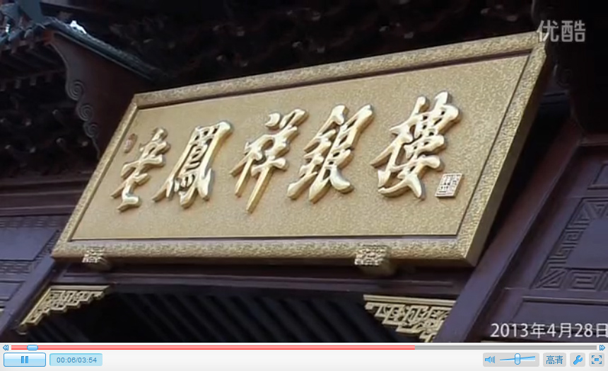

上海是我国近代银楼业的发祥地，上海老凤祥银楼的前身“凤祥裕记银楼”于1848年（清道光28年）创建。 1908年（光绪34年）迁址南京东路（现南京东路432号）延续至今，这一旧址便是现今的老凤祥总店。
近年来，老凤祥公司努力推进资源整合、体制改革，积极以品牌优势资源为出发点，按“做优为基础、 做强为根本、做大为目标”的品牌战略发展方针，努力推进市场营销网络开拓，主动以市场消费变化调整产品结构，不断扩大品牌的宣传力度，举行丰富多彩的推广活动，使“老凤祥”品牌在上海地区家喻户晓，在华东地区享誉市场，在全国首饰业中名列前茅，并实现了企业经营业绩的快速发展。
“牌子老，款式新，工艺精，信誉好”是消费者对老凤祥品牌的共识。而这一切，来源于老凤祥不断创新的经营理念、严格的质量管理体系、完善的银楼管理标准和齐全的十大特色服务。广为流传的“老凤祥首饰，三代人的青睐”正反映出了消费者对这一首饰著名品牌的钟爱。
“营销创新、技术创新、管理创新、机制创新”。老凤祥继承和发扬了一个半世纪以来企业发展的优秀传统和卓越风貌，一方面努力以良好的信誉、精湛的技艺、优质的产品和热诚的服务来赢得了广大消费者的信赖；另一方面积极探索首饰业新材料、新产品、新技术和高附加值的“三新一高”之路，并取得了经营业绩和品牌建设的双丰收。
老凤祥近日公告称，公司控股子公司上海老凤祥有限公司拟与外方自然人资设立上海老凤祥-MODICA工艺礼品有限公司，工艺礼品公司注册资本200万美元，其中上海老凤祥有限公司现金出资140万美元，占70%；MODICA以著作权投资，计60万美元，占30%。
公告显示，合资公司组建后将重点开发以“外滩牛”为核心的产品，包括贵金属和非金属“外滩牛”礼品、旅游纪念品、邮品、饰品、实用纪念品等。合资公司投资项目回收期为5年3个月。
上海是我国近代银楼业的发祥地，上海老凤祥银楼的前身“凤祥裕记银楼”于1848年（清道光28年）创建。 1908年（光绪34年）迁址南京东路（现南京东路432号）延续至今，这一旧址便是现今的老凤祥总店。
近年来，老凤祥公司努力推进资源整合、体制改革，积极以品牌优势资源为出发点，按“做优为基础、 做强为根本、做大为目标”的品牌战略发展方针，努力推进市场营销网络开拓，主动以市场消费变化调整产品结构，不断扩大品牌的宣传力度，举行丰富多彩的推广活动，使“老凤祥”品牌在上海地区家喻户晓，在华东地区享誉市场，在全国首饰业中名列前茅，并实现了企业经营业绩的快速发展。
老凤祥165周年华诞 赵雅芝欢乐中国行（姑苏站）
